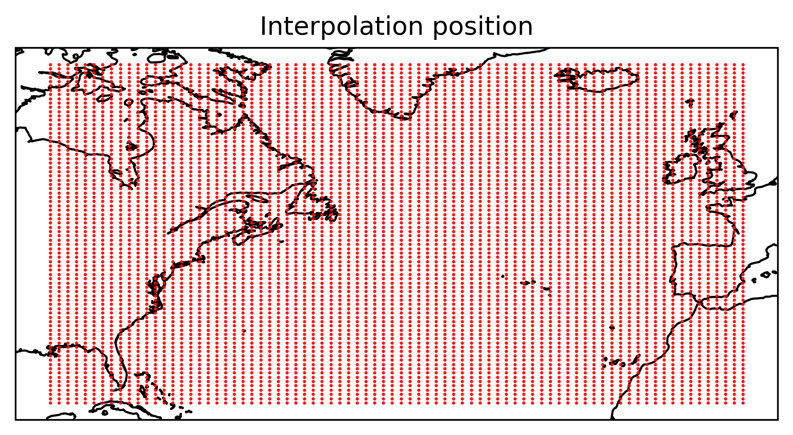
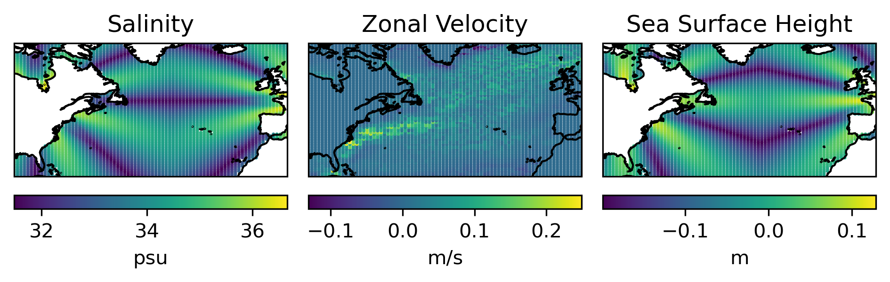
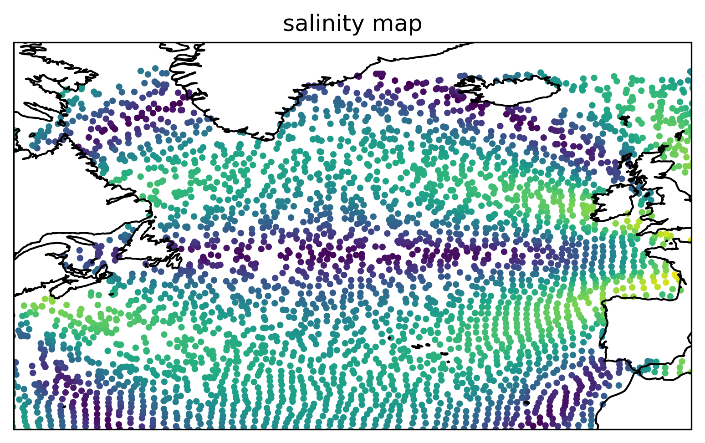
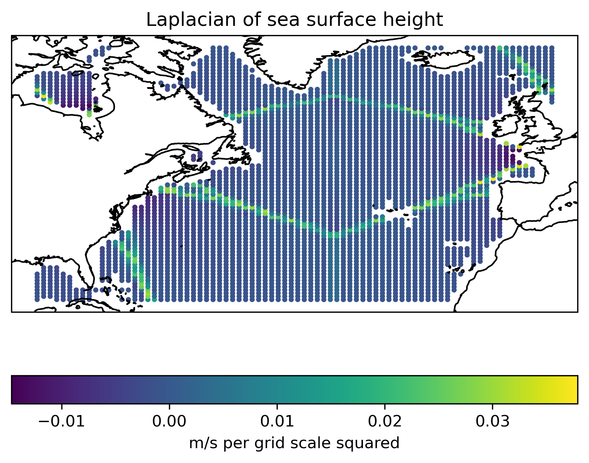

Use seaduck.OceInterp with ECCO#
seaduck Lagrangian particle demonstration. This version uses a reduced version of the ECCO MITgcm velocity field data.
authors: Wenrui Jiang, Tom Haine Feb ‘23
Show code cell source
import cartopy.crs as ccrs
import matplotlib as mpl
import matplotlib.pyplot as plt
import numpy as np
import seaduck as sd
mpl.rcParams["figure.dpi"] = 300
Loading Dataset#
The ECCO MITgcm run is a low-resolution global state estimate(Forget et al, 2015). An artifact of note is that this dataset has complex grid topology, which means there is a face (also called tile) dimension in the dataset.
A built-in function in seaduck.utils can help access the snippet of ECCO that this example is based on. The grid of this dataset is the same as the original dataset, while all other variables are synthetic.
ecco = sd.utils.get_dataset("ecco")
ecco
<xarray.Dataset> Size: 1GB
Dimensions: (Z: 50, face: 13, Y: 90, Xp1: 90, Yp1: 90, X: 90, Zl: 50,
Zp1: 51, Zu: 50, time: 3, nv: 2, time_midp: 2)
Coordinates: (12/42)
* Z (Z) float32 200B -5.0 -15.0 -25.0 ... -5.461e+03 -5.906e+03
PHrefC (Z) float32 200B dask.array<chunksize=(50,), meta=np.ndarray>
drF (Z) float32 200B dask.array<chunksize=(50,), meta=np.ndarray>
k (Z) int64 400B dask.array<chunksize=(50,), meta=np.ndarray>
* face (face) int64 104B 0 1 2 3 4 5 6 7 8 9 10 11 12
* Y (Y) int64 720B 0 1 2 3 4 5 6 7 8 9 ... 81 82 83 84 85 86 87 88 89
... ...
* Zu (Zu) float32 200B -10.0 -20.0 -30.0 ... -5.678e+03 -6.134e+03
k_u (Zu) int64 400B dask.array<chunksize=(50,), meta=np.ndarray>
* time (time) datetime64[ns] 24B 1992-01-16T12:00:00 ... 1992-03-16T1...
timestep (time) int64 24B dask.array<chunksize=(1,), meta=np.ndarray>
time_bnds (time, nv) datetime64[ns] 48B dask.array<chunksize=(3, 2), meta=np.ndarray>
* time_midp (time_midp) datetime64[ns] 16B 1992-01-31T12:00:00 1992-03-01T...
Dimensions without coordinates: nv
Data variables: (12/13)
UVELMASS1 (Z, face, Y, Xp1) float16 11MB dask.array<chunksize=(25, 7, 45, 45), meta=np.ndarray>
VVELMASS1 (Z, face, Yp1, X) float16 11MB dask.array<chunksize=(25, 7, 45, 45), meta=np.ndarray>
WVELMASS1 (Zl, face, Y, X) float16 11MB dask.array<chunksize=(25, 7, 45, 45), meta=np.ndarray>
UVELMASS (time, Z, face, Y, Xp1) float64 126MB 0.0 0.0 0.0 ... 0.0 0.0 0.0
WVELMASS (time, Zl, face, Y, X) float64 126MB 0.0 0.0 0.0 ... 0.0 0.0 0.0
VVELMASS (time, Z, face, Yp1, X) float64 126MB 0.0 0.0 0.0 ... 0.0 0.0 0.0
... ...
SALT_snap (time_midp, Z, face, Y, X) float64 84MB 31.5 31.61 ... 82.64 82.5
ETAN (time, face, Y, X) float64 3MB -0.01716 -0.0167 ... -0.05147
ETAN_snap (time_midp, face, Y, X) float64 2MB -0.02574 ... -0.04289
utrans (time, Z, face, Y, Xp1) float64 126MB dask.array<chunksize=(3, 50, 13, 90, 90), meta=np.ndarray>
vtrans (time, Z, face, Yp1, X) float64 126MB dask.array<chunksize=(3, 50, 13, 90, 90), meta=np.ndarray>
wtrans (time, Zl, face, Y, X) float64 126MB dask.array<chunksize=(3, 50, 13, 90, 90), meta=np.ndarray>
Attributes: (12/16)
OceanSpy_description: ECCO v4r4 3D dataset, ocean simulations on LL...
OceanSpy_face_connections: {'face': {0: {'X': ((12, 'Y', False), (3, 'X'...
OceanSpy_grid_coords: {'Y': {'Y': None, 'Yp1': -0.5}, 'X': {'X': No...
OceanSpy_name: ECCO_v4r4
OceanSpy_parameters: {'rSphere': 6371.0, 'eq_state': 'jmd95', 'rho...
date_created: Mon Dec 30 11:13:26 2019
... ...
geospatial_vertical_max: -5.0
geospatial_vertical_min: -5906.25
nx: 90
ny: 90
nz: 50
title: ECCOv4 MITgcm grid informationAccess full ECCO dataset
The ECCO dataset is publicly available on SciServer. The simulation output can be opened using the OceanSpy package with the from_catalog method (Oceanspy is already available in the Oceanography container environment on SciServer).
Choose between the monthly-mean data (‘ECCO’)
ecco = ospy.open_oceandataset.from_catalog("ECCO")._ds
or the daily-mean data (‘daily_ecco’).
ecco = ospy.open_oceandataset.from_catalog('daily_ecco')._ds
Click here for a full list of the datasets hosted on SciServer.
Experiment setup#
Specify the parameters for the particles (number, positions, start time).
# Define the extent of the box
west = -90.0
east = 0.0
south = 23.0
north = 67.0
shallow = -10.0
deep = -10.0
time = "1992-02-15"
Nlon = 80 # How many along longitudinal direction?
Nlat = 80 # How many along latitudinal direction?
Ndep = 1 # How many along vertical direction?
x, y, z, t = sd.utils.easy_3d_cube(
(east, west, Nlon),
(south, north, Nlat),
(shallow, deep, Ndep),
time,
print_total_number=True,
)
A total of 6400 positions are defined.
Plot the particle positions
Show code cell source
ax = plt.axes(projection=ccrs.PlateCarree())
ax.plot(x, y, "ro", markersize=0.5)
ax.coastlines()
ax.set_title("Interpolation position")
plt.show()

Let’s explore seaduck.OceInterp#
This is the most high-level function of the package. Yes, it’s very easy to use.
help(sd.OceInterp)
Show code cell output
Help on function OceInterp in module seaduck.oceinterp:
OceInterp(od, var_list, x, y, z, t, kernel_list=None, lagrangian=False, lagrange_kwarg={}, update_stops='default', return_in_between=True, return_pt_time=True, kernel_kwarg={})
Interp for people who just want to take a quick look.
**This is the centerpiece function of the package, through which
you can access almost all of its functionality.**.
Parameters
----------
od: OceInterp.OceData object or xarray.Dataset (limited support for netCDF Dataset)
The dataset to work on.
var_list: str or list
A list of variable or pair of variables.
kernel_list: OceInterp.KnW or list of OceInterp.KnW objects, optional
Indicates which kernel to use for each interpolation.
x, y, z: numpy.ndarray, float
The location of the particles, where x and y are in degrees,
and z is in meters (deeper locations are represented by more negative values).
t: numpy.ndarray, float, string/numpy.datetime64
In the Eulerian scheme, this represents the time of interpolation.
In the Lagrangian scheme, it represents the time needed for output.
lagrangian: bool, default False
Specifies whether the interpolation is done in the Eulerian or Lagrangian scheme.
lagrange_kwarg: dict, optional
Keyword arguments passed into the OceInterp.lagrangian.Particle object.
update_stops: None, 'default', or iterable of float
Specifies the time to update the prefetch velocity.
return_in_between: bool, default True
In Lagrangian mode, this returns the interpolation not only at time t,
but also at every point in time when the speed is updated.
return_pt_time: bool, default True
Specifies whether to return the time of all the steps.
kernel_kwarg: dict, optional
keyword arguments to pass into seaduck.KnW object.
Interpolate these ECCO fields at Eulerian positions.#
[s, (u, v), eta, mask] = sd.OceInterp(
ecco, ["SALT", ("UVELMASS", "VVELMASS"), "ETAN", "maskC"], x, y, z, t
)
Plot the interpolated salinity, \(u\), \(\eta\) field.
Warning
In case you haven’t notice, SALT, ETAN are purely synthetic.
Show code cell source
unit = ["psu", "m/s", "m"]
name = ["Salinity", "Zonal Velocity", "Sea Surface Height"]
for i, var in enumerate([s, u, eta]):
ax = plt.subplot(1, 3, 1 + i, projection=ccrs.PlateCarree())
c = ax.scatter(x, y, c=var, s=0.5)
ax.coastlines()
ax.set_xlim([west, east])
ax.set_ylim([south, north])
plt.colorbar(c, location="bottom", label=unit[i], pad=0.03)
ax.set_title(name[i])
plt.tight_layout()
plt.show()

The salinity and the sea surface height variable here are not model output but randomly generated noise and there are values on land as well. However, the package respects the mask provided by the model, so even though there are apparently values on land, NaNs are returned.
This is not the case for velocity. The mask for the staggered velocity field is not provided by the model, so the actual value (zero here) is returned.
Now compute Lagrangian trajectories for these particles.#
First, define the start_time and end_time. Here the particles are integrated backwards in time.
start_time = "1992-01-17"
end_time = "1992-03-12"
t_bnds = np.array(
[
sd.utils.convert_time(start_time),
sd.utils.convert_time(end_time),
]
)
Perform the particle trajectory simulation.#
To switch between Lagrangian and Eulerian modes, you only need to change the lagrangian keyword argument.
The following code block simulates the trajectory and records the salinity along the particle trajectories, as well as their (lat,lon) positions.
stops, [s, raw, lat, lon] = sd.OceInterp(
ecco,
["SALT", "__particle.raw", "__particle.lat", "__particle.lon"],
x,
y,
z,
t_bnds,
lagrangian=True,
return_pt_time=True,
)
1992-01-31T12:00:00
1992-03-01T12:00:00
1992-03-12T00:00:00
There are 3 output times. See also the diagnostic output from running the integration.
len(stops)
3
The raw output is a list of seaduck.Position objects which stores, of course, the position of the particle at specific times.
raw
[<seaduck.lagrangian.Particle at 0x7f09e9d349d0>,
<seaduck.lagrangian.Particle at 0x7f09e8b779d0>,
<seaduck.lagrangian.Particle at 0x7f09e89a1610>]
Plot the interpolated salinity field on the final particle positions.#
Show code cell source
ax = plt.axes(projection=ccrs.PlateCarree())
ax.scatter(lon[-1], lat[-1], c=s[-1], s=6)
ax.coastlines()
ax.set_xlim([-70, 0])
ax.set_ylim([30, 70])
plt.title("salinity map")
plt.show()

Calculate derivatives#
Kernel object#
The kernel object defines which neighboring points are used for the interpolation, and also what kind of operation is conducted. The default is interpolation. However, you can also use this class to calculate derivatives.
KnW = sd.kernel_weight.KnW
help(KnW)
Show code cell output
Help on class KnW in module seaduck.kernel_weight:
class KnW(builtins.object)
| KnW(kernel=array([[ 0, 0],
| [ 0, 1],
| [ 0, 2],
| [ 0, -1],
| [ 0, -2],
| [-1, 0],
| [-2, 0],
| [ 1, 0],
| [ 2, 0]]), inheritance='auto', hkernel='interp', vkernel='nearest', tkernel='nearest', h_order=0, ignore_mask=False)
|
| Kernel object.
|
| A class that describes anything about the
| interpolation/derivative kernel to be used.
|
| Parameters
| ----------
| kernel: numpy.ndarray
| The largest horizontal kernel to be used
| inheritance: list
| The inheritance sequence of the kernels
| hkernel: str
| What to do in the horizontal direction
| 'interp', 'dx', or 'dy'?
| tkernel: str
| What kind of operation to do in the temporal dimension:
| 'linear', 'nearest' interpolation, or 'dt'
| vkernel: str
| What kind of operation to do in the vertical:
| 'linear', 'nearest' interpolation, or 'dz'
| h_order: int
| How many derivative to take in the horizontal direction.
| Zero for pure interpolation
| ignore_mask: bool
| Whether to diregard the masking of the dataset.
| You can select True if there is no
| inheritance, or if performance is a big concern.
|
| Methods defined here:
|
| __eq__(self, other)
| Return self==value.
|
| __hash__(self)
| Return hash(self).
|
| __init__(self, kernel=array([[ 0, 0],
| [ 0, 1],
| [ 0, 2],
| [ 0, -1],
| [ 0, -2],
| [-1, 0],
| [-2, 0],
| [ 1, 0],
| [ 2, 0]]), inheritance='auto', hkernel='interp', vkernel='nearest', tkernel='nearest', h_order=0, ignore_mask=False)
| Initialize self. See help(type(self)) for accurate signature.
|
| get_weight(self, rx, ry, rz=0, rt=0, pk4d=None, bottom_scheme='no flux')
| Return the weight of values given particle rel-coords.
|
| Parameters
| ----------
| rx,ry,rz,rt: numpy.ndarray
| 1D array of non-dimensional particle positions
| pk4d: list
| A mapping on which points should use which kernel.
| bottom_scheme: str
| Whether to assume there is a ghost point with same value at
| the bottom boundary.
| Choose None for vertical flux, 'no flux' for most other cases.
|
| Returns
| -------
| weight: numpy.ndarray
| The weight of interpolation/derivative for the points
| with shape (N,M),
| M is the num of node in the largest kernel.
|
| same_hsize(self, other)
| Return True if 2 KnW object has the same horizontal size.
|
| same_size(self, other)
| Return True if 2 KnW object has the same 4D size.
|
| size_hash(self)
| Produce a hash value based on the 4D size of the KnW object.
|
| ----------------------------------------------------------------------
| Data descriptors defined here:
|
| __dict__
| dictionary for instance variables
|
| __weakref__
| list of weak references to the object
|
| ----------------------------------------------------------------------
| Data and other attributes defined here:
|
| __slotnames__ = []
Let’s define derivative kernels for \(\partial / \partial z\), \(\partial^2 / \partial x^2\), \(\partial^2 / \partial y^2\), and \(\partial / \partial t\) as examples:
dz_kernel = KnW(vkernel="dz")
dx2_kernel = KnW(hkernel="dx", h_order=2, inheritance=None)
dy2_kernel = KnW(hkernel="dy", h_order=2, inheritance=None)
dt_kernel = KnW(tkernel="dt")
Apply the kernels to the ECCO fields:
d2edx2, d2edy2 = sd.OceInterp(
ecco, ["ETAN", "ETAN"], x, y, z, t, kernel_list=[dx2_kernel, dy2_kernel]
)
Plot one of the differentiated fields on the initial particle positions.#
laplacian = d2edx2 + d2edy2
Show code cell source
ax = plt.axes(projection=ccrs.PlateCarree())
c = ax.scatter(x, y, c=laplacian, s=5)
ax.coastlines()
plt.colorbar(c, location="bottom", label="m/s per grid scale squared")
plt.title("Laplacian of sea surface height")
plt.show()
